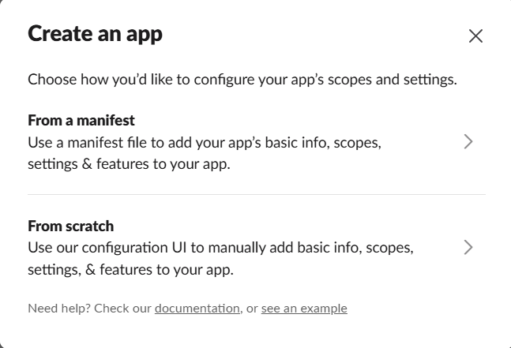
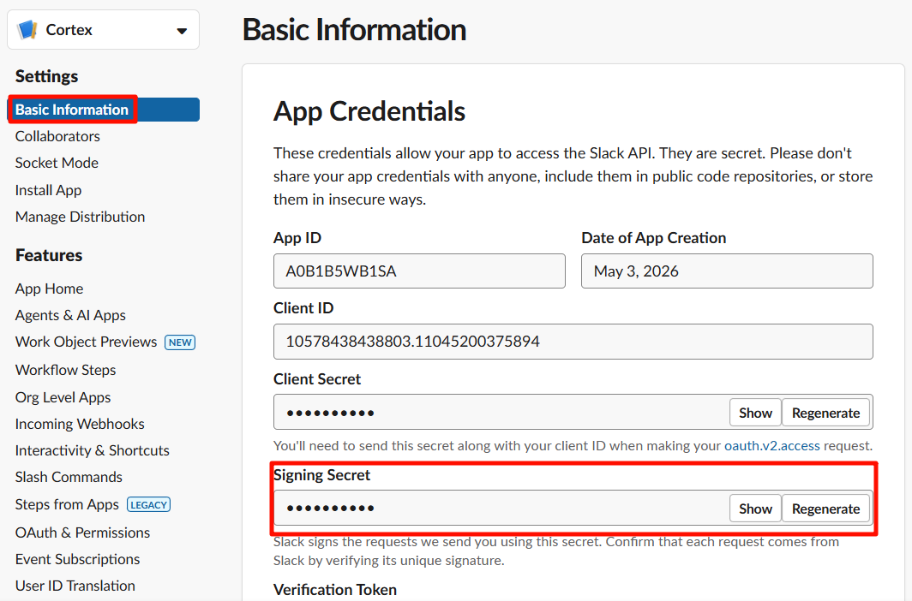
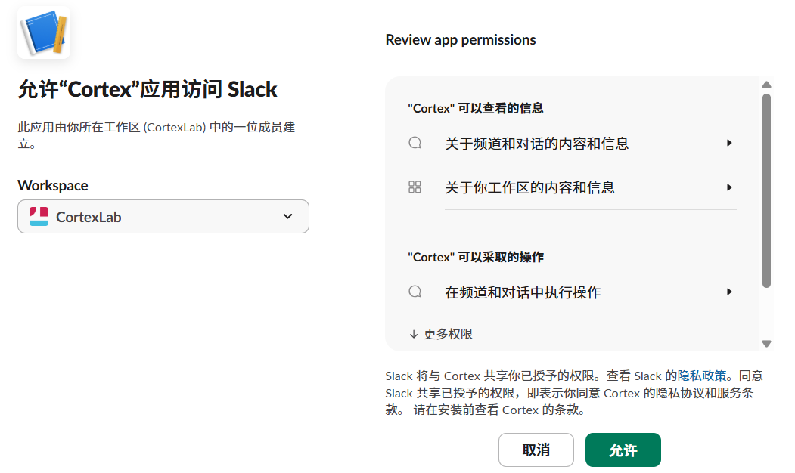
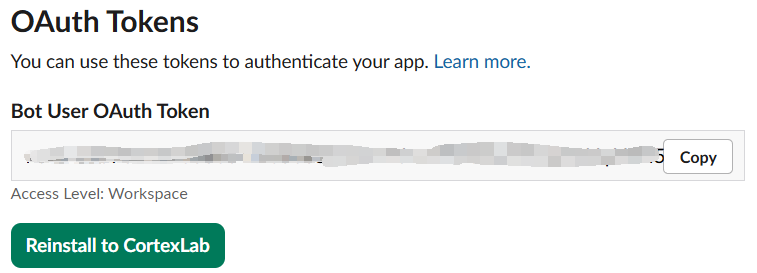
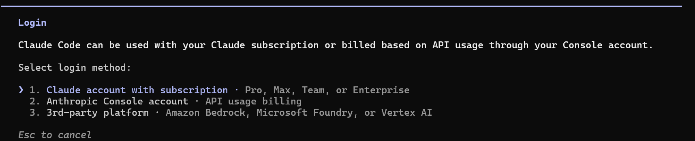

快速入门¶
从零开始，大约 5 分钟内让 Cortex 智能体在聊天工具中回复你，其中大部分时间是在等待 npm 安装和填写聊天平台的应用创建页面。
Cortex 通过 Slack 或飞书（Lark）与你对话——任选其一，或同时运行两者。cortex init 几乎完成所有工作。你不需要手动编辑任何配置文件。本指南告诉你每个提示的预期内容，并精确指示界面中的操作位置。
前置条件¶
- Node.js ≥ 20（Cortex 本身要求 20+；捆绑的编程智能体后端推荐 22）。
- 一个 Slack 工作区或一个飞书（Lark）组织，你可以在其中创建应用。
- 大约 2 GB 空闲磁盘空间，用于后端、插件和日志。
你不需要预先安装 claude（Claude Code）或 pi（pi-coding-agent）。不需要预先安装 git。不需要预先创建任何目录或 env 文件。cortex init 会为你安装所有这些。
检查 Node.js 版本¶
打开终端，运行：
你应该看到类似 v22.14.0 的输出。如果版本低于 20，或看到 command not found: node，请使用以下方法安装或升级 Node.js。
安装 Node.js¶
macOS（Homebrew）：
Linux（nvm，推荐）：
curl -o- https://raw.githubusercontent.com/nvm-sh/nvm/v0.40.3/install.sh | bash
# 重启终端，然后：
nvm install 22
nvm use 22
Linux（apt，Ubuntu/Debian 24.04+）：
Windows：
从 nodejs.org 下载 LTS 安装包（选择 "LTS" 版本，22.x 或更高）。运行 .msi 安装程序并按提示操作。安装完成后重启终端。
验证安装：
第一步 — 安装 Cortex¶
这会在你的 PATH 中放置三个命令：cortex、cortex-task、cortex-run。
如果 npm install -g 因权限错误而失败（Linux 上常见），请加 sudo，或更好的做法是配置 npm 使用用户本地前缀：
mkdir -p ~/.npm-global
npm config set prefix ~/.npm-global
echo 'export PATH=~/.npm-global/bin:$PATH' >> ~/.bashrc
source ~/.bashrc
npm install -g @cortex-agent/server
第二步 — 运行设置向导¶
向导会遍历以下提示。默认值都是合理的；按回车接受即可。以下是每个提示的作用及如何回答。
2.1 选择语言¶
第一个提示选择 Cortex 用于系统生成消息以及本向导其余部分的语言。它默认采用你的系统区域设置，所以中文系统会预选 中文。该选择会保存到 config/preferences.json，之后可通过 !lang 命令更改。
2.2 选择后端¶
- Claude Code — 如果你有 Anthropic 订阅（Claude Pro、Max 或 API），推荐使用。Cortex 会自动安装。
- PI — 如果你通过 PI 订阅其他 LLM 提供商，选此项。
你可以两者都选。Cortex 会在下一步对你选择的每个后端运行 npm install -g。
2.3 选择交互平台¶
这是一个多选项。用空格切换，回车确认。可以选 Slack、飞书，或两者都选——Cortex 会组合你选择的平台并同时连接到所有平台。你选择的每个平台都会触发各自的凭据收集步骤（先 Slack，后飞书）。
留空则跳过平台设置。稍后可通过 cortex init --force 或编辑 $CORTEX_HOME/config/.env 来配置某个平台。
2.4 Slack 应用设置（在浏览器中逐步操作）¶
如果你没有选择 Slack，跳过本节。
Cortex 首先打印完整的 Slack 应用清单，并询问是否要复制到剪贴板。按 c 键 — 清单 JSON 现在已复制到剪贴板。
a) 打开 Slack API 应用页面¶
前往 https://api.slack.com/apps。
b) 从清单创建新应用¶
点击绿色的 Create New App 按钮，然后点击 From a manifest。如果还没有工作区，需要先创建一个。

c) 选择工作区并粘贴清单¶
- 从下拉菜单中选择你的 Slack 工作区。
- 将清单 JSON 粘贴到文本区域（Ctrl+V / Cmd+V）。清单已由
cortex init复制到剪贴板，直接粘贴即可。 - 点击 Next。
- 查看摘要后点击 Create。

d) 复制 Signing Secret¶
创建完成后，Slack 会将你带到应用的 Basic Information 页面。在 App Credentials 下方，找到 Signing Secret。点击 Show 并复制。
回到终端，将其粘贴为 SLACK_SIGNING_SECRET。

e) 生成 App-Level Token（xapp-…）¶
在同一 Basic Information 页面向下滚动到 App-Level Tokens 部分。点击 Generate Token and Scopes。
- Token Name：
cortex-socket - Add Scope：
connections:write - 点击 Generate
复制出现的令牌（以 xapp- 开头）。注意：令牌只显示一次，请立即复制。
回到终端，将其粘贴为 SLACK_APP_TOKEN。

f) 安装到工作区并复制 Bot Token（xoxb-…）¶
在左侧边栏中点击 OAuth & Permissions。滚动到 OAuth Tokens 部分，点击 Install to Workspace。在授权页面上点击 Allow。
安装完成后，页面顶部会显示 Bot User OAuth Token（以 xoxb- 开头）。复制它。
回到终端，将其粘贴为 SLACK_BOT_TOKEN。


g) 启用 Messages Tab¶
在左侧边栏中点击 App Home。向下滚动到 Show Tabs 部分：
- 勾选 Messages Tab（使其出现在机器人的 App Home 中）。
- 勾选 Allow users to send Slash commands and messages from the messages tab（以便你可以给机器人发私信）。
如果不勾选此项，你可以在频道中 @cortex 机器人，但无法给它发私信。

h) 管理频道¶
Cortex 会把启动通知、审批请求和其他运维消息发送到管理频道。设置过程中无需输入任何内容——Cortex 会在你第一次给机器人发私信时自动检测管理频道并持久化。
如果你想把管理消息发送到指定频道（例如共享的运维频道），从 Slack 获取频道 ID（右键点击频道名称 → View channel details → 在对话框底部复制 Channel ID），然后在 $CORTEX_HOME/config/settings.json 中设置 adminChannel 键（见 configuration.md）。.env 中的旧变量 SLACK_ADMIN_CHANNEL / CORTEX_ADMIN_CHANNEL 仍作为已弃用的回退可用。
2.5 飞书应用设置（在浏览器中逐步操作）¶
如果你没有选择飞书，跳过本节。Cortex 会打印设置指南，然后收集你的应用凭据。
a) 创建飞书应用¶
前往 https://open.feishu.cn/app，点击 创建 agentic 应用（Create Agentic App）。输入应用名称（例如 CortexAgent），选择头像，然后点击 创建。
b) 复制 App ID 和 App Secret¶
创建后，应用页面会显示 App ID 和 App Secret。复制它们。
回到终端，在 FEISHU_APP_ID 和 FEISHU_APP_SECRET 提示处粘贴。
c) 订阅消息事件¶
在应用的事件配置中，启用机器人事件并订阅 im.message.receive_v1。如果不订阅，机器人永远收不到你的消息。
d) 域名（可选）¶
输入 feishu 使用飞书（中国大陆）域名，或输入 lark 使用国际 Lark 域名。留空则使用默认值。
e) 文档操作的身份¶
Cortex 的 MCP 工具可以创建和编辑飞书文档（docx、wiki、bitable、sheets、drive）。此提示决定这些文档的归属。选择 bot 使应用成为拥有者。选择 user 使你自己的飞书账号成为拥有者，文档会保留在你的个人空间中——这是推荐选项。
如果选择 user，cortex init 会立即运行飞书用户登录（OAuth 设备流程），让你一次性完成授权。它会打印一个 URL——在任意浏览器中打开，批准访问，Cortex 会自动轮询获取令牌，无需重定向 URI。如果你跳过或中止登录，凭据仍会被保存，之后可用 cortex feishu login 完成授权。
2.6 机器名称¶
默认为你的主机名。除非你想要自定义标签，否则直接按回车。
2.7 GPU 检测¶
Cortex 运行 nvidia-smi 并打印数量。无需输入。如果没有 NVIDIA GPU，它会打印 0 — 对于大多数使用场景完全没问题。
2.8 aistatus 令牌使用报告？¶
可选的，选择是否在 aistatus.cc 的公共排行榜上分享匿名令牌计数。如果选择是，需提供姓名、组织和邮箱（邮箱仅用于身份识别，不会显示）。
2.9 注册为系统服务？¶
- macOS — 在
~/Library/LaunchAgents/com.cortex.daemon.plist创建launchdplist。守护进程在登录时自动启动。 - Linux — 创建
systemd --user单元（无需sudo）。守护进程在登录时自动启动。 - Windows — 不支持。需手动运行
cortex daemon。
2.10 自动检测后端用于网关/配置？¶
如果你已在其他终端中登录过后端，回答 Yes。Cortex 会扫描你的 ~/.claude/.credentials.json 和 ~/.pi/agent/ 来发现端点，并让你选择哪个发现的（mode, model）对成为 plan 配置（由执行智能体使用——planner、doc-writer、coder 等），哪个成为 execute 配置（由审查智能体使用）。
如果还没有登录：新开一个终端，输入 claude（或 pi，取决于你在 2.2 中选择的后端）启动会话，然后在会话里输入 /login，按提示选择与你的订阅相符的登录方式。

登录完成后回到向导，回答 Yes，凭据即会被识别。
你也可以稍后通过 cortex setup-gateway 运行此步骤。
2.11 后端登录过期怎么办¶
后端凭据会在一段时间后过期。过期后智能体运行会失败并报认证错误，例如：
处理方法与上面的登录流程相同：新开一个终端，输入 claude（或 pi，取决于你使用的后端）启动会话，然后在会话里输入 /login，按提示选择与你的订阅相符的登录方式。
登录完成后，刷新的凭据会在下一次智能体运行时被识别。如果端点或模型发生了变化，重新运行 cortex setup-gateway，让 plan 与 execute 配置指向新的后端。
向导完成后你会看到：
cortex init 创建了什么¶
所有内容都位于 CORTEX_HOME（默认 ~/.cortex/）下：
~/.cortex/
├── .git/ # 自动 git 初始化，所有状态均已提交
├── CORTEX.md # 根智能体上下文（从默认值初始化）
├── config/
│ ├── .env # CORTEX_PLATFORM 列表 + 平台令牌 + CORTEX_MACHINE
│ ├── feishu-user-token.json # 飞书用户身份令牌（仅当 FEISHU_AUTH_MODE=user 时）
│ ├── preferences.json # 操作者界面语言
│ ├── budget.json # 每日/每月预算限制
│ ├── machines.json # 本机能力（gpuCount、路径）
│ ├── mcp-config.json # 直接会话 MCP 服务器
│ ├── mcp-config-core.json # 远程执行/时间分层
│ ├── mcp-config-tasks.json # 只读任务监控分层
│ ├── mcp-config-manager-qa.json # 共享 manager 回答分层
│ ├── mcp-config-thread.json # 线程控制分层
│ ├── mcp-config-tui.json # TUI 交互分层
│ ├── profiles.json # 命名的（后端、模型）配置
│ ├── thread-templates/ # 多智能体线程定义
│ │ └── agents/、templates/、shells/ # 每个实体一个 JSON 文件
│ └── hooks/ # 钩子注册表——每个钩子一个 JSON 声明
├── data/
│ ├── mode.json # 当前模式 + 活跃配置
│ └── schedules.json # 初始化的周期性任务
├── context/ # 项目日志存放在这里
│ ├── CORTEX.md、projects/、decisions/、scans/、ideas/、retrospectives/、user/
├── plugins/ # 8 个角色限定技能插件（默认值的完整副本）
├── prompts/ # 指令、系统提示、模板
├── rules/ # 智能体自动加载的规则文件
├── hooks/ # 钩子脚本（.mjs）
├── .claude/ # Claude Code 钩子 + 设置
└── logs/ # 守护进程 + LLM 日志
正常使用时你不应该手动编辑任何这些文件。cortex init --force 会重新生成自动生成的文件（mcp-config*.json、machines.json、mode.json），同时保留你的 .env、配置和内容文件。
~/.aistatus/ 单独存放：
第三步 — 启动服务器¶
如果你在第二步 2.9 中选择了注册系统服务，守护进程已在运行，可以跳过此步骤。通过以下命令检查：
你应该看到确认守护进程正在运行的输出，包括 Slack 连接状态和活跃的配置。
第四步 — 发送你的第一条消息¶
现在进入有趣的部分。打开 Slack 或飞书，找到你刚安装的 Cortex 机器人，发起私信（DM）。
4.1 打个招呼¶
给机器人发私信：
第一条私信是 Cortex 用来自动检测管理频道的（除非你在 config/settings.json 中显式设置了 adminChannel）。你应该在几秒钟内收到回复。
4.2 创建你的第一个项目¶
给 Cortex 一个使命。Cortex 会创建项目、设置目录结构并回复确认：
Cortex 会回复它创建的项目结构、分解的初始任务，并询问是否要开始执行。
4.3 在已有项目中创建任务¶
有了项目后，可以直接从 Slack 添加任务：
Cortex 会将任务添加到项目的 TASKS.yaml 中，分配 hex ID、设置优先级和依赖关系，并回复确认。
4.4 查看项目状态¶
Cortex 会读取项目的 STATUS.md、TASKS.yaml 和最近的实验记录，然后给你一个当前状况的摘要。
一旦项目任务队列中有任务，Cortex 会自动挑选并派发优先级最高且就绪的任务——你不需要告诉它"开始执行"。只需持续添加任务，Cortex 会自主推进。
接下来读什么¶
- 创建 Slack 应用时出了问题，或想在运行
cortex init之前先完成设置 — 阅读 slack-setup.md。 - 想了解 Cortex 识别的每个配置文件和环境变量，或覆盖某个自动生成的路径 — 阅读 configuration.md。
- 想了解每个 CLI 子命令和标志 — 阅读 cli-reference.md。
- 想切换后端或添加其他提供商 — 阅读 backends.md。
- 想了解多智能体线程管道的工作原理 — 阅读 threads.md。
- 想将远程机器连接到 Cortex — 阅读 cross-machine.md。
- 想了解项目日志结构（实验、知识、模式）— 阅读 memory.md。